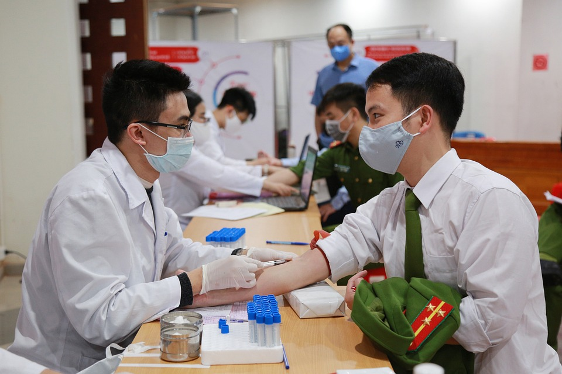

| Service |
Image |
Description |
| Health Promotion & Education |
|
Public awareness campaigns, health education programs, distribution of health information materials. |
| Environmental Health |
 |
Food safety and sanitation, vector control, waste management, environmental protection. |
| Disaster Preparedness & Response |
|
Disaster preparedness plans, medical assistance during emergencies, coordination with other agencies. |
| Communicable Disease Control |
|
- HIV/AIDS testing and counseling
- Vaccination programs (e.g., COVID-19, influenza)
- Tuberculosis screening and treatment
|
| Laboratory Services |
 |
- Blood testing (e.g., blood sugar, cholesterol, HIV)
- Other diagnostic tests
|
| Data Collection & Analysis |
 |
Collecting and analyzing health data, informing health policy and program development. |
| Advocacy & Policy Development |
 |
Advocating for health-promoting policies, developing and implementing health programs. |